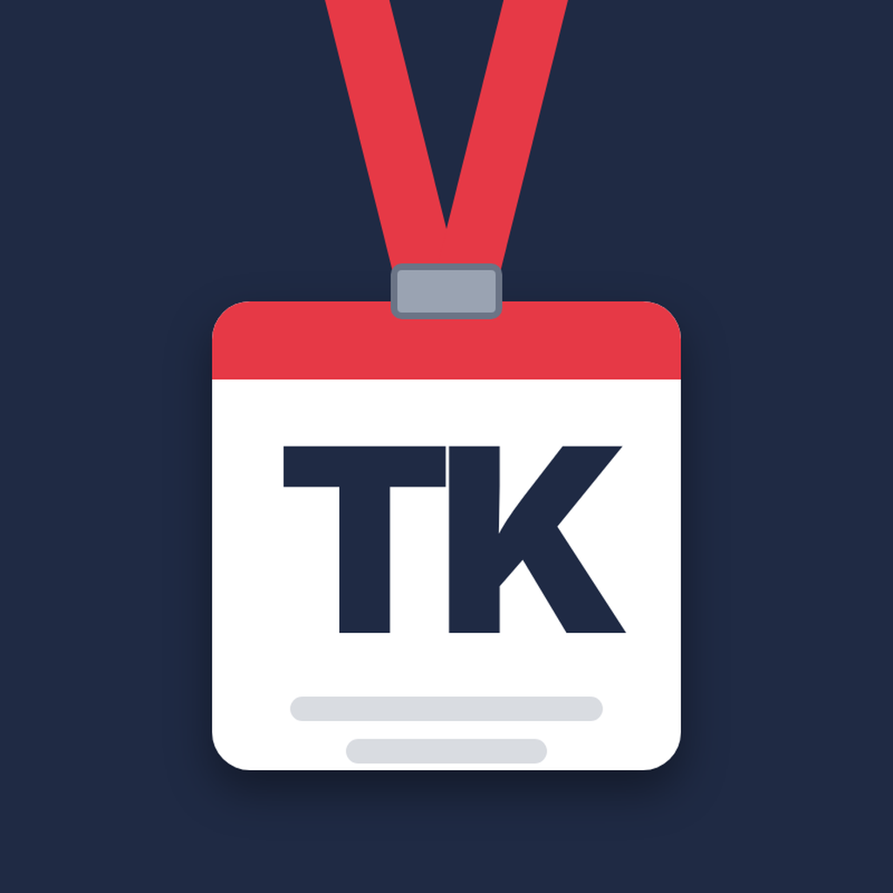

TypoweKorpoPolityka prywatności / Privacy Policy
Ostatnia aktualizacja: 27 października 2026 r.
„TypoweKorpo” to prywatne narzędzie twórcy kanałów YouTube @TypoweKorpo i TikTok @typowe_korpo, używane wyłącznie przez właściciela kanałów do prowadzenia ewidencji odcinków w Arkuszach Google oraz do przesyłania jego własnych filmów na jego własne konta YouTube i TikTok.
Jakie dane przetwarzamy
- Token dostępu OAuth do konta Google i TikTok właściciela, przechowywany wyłącznie lokalnie na jego komputerze.
- Dane w arkuszu ewidencji (tytuły, statusy, linki do filmów, statystyki zużycia narzędzi) oraz pliki wideo przesyłane na kanały.
Aplikacja nie zbiera danych innych użytkowników, nie udostępnia danych osobom trzecim, nie używa ich do reklam ani do trenowania modeli. Dane z interfejsów API Google są używane zgodnie z Google API Services User Data Policy, w tym z wymogami Limited Use.
Usunięcie danych
Dostęp można w każdej chwili cofnąć w ustawieniach konta Google (myaccount.google.com/permissions) i TikTok. Lokalny token jest wtedy bezużyteczny i zostaje usunięty.
English summary
TypoweKorpo is a private tool used only by the owner of the YouTube channel @TypoweKorpo and TikTok account @typowe_korpo to keep an episode log in Google Sheets and upload the owner's own videos to the owner's own accounts. OAuth tokens are stored only on the owner's computer. No data of other users is collected, shared, sold or used for advertising or model training. Use of Google API data complies with the Google API Services User Data Policy, including the Limited Use requirements. Access can be revoked at any time at myaccount.google.com/permissions and in TikTok settings.